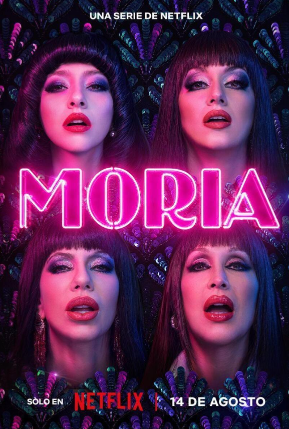

MORIA
"Si quieren fama, ya saben de dónde colgarse."
- 2026
- 1 temporada
- 8 episodios
- Drama biográfico
- Solo en Netflix
La serie
De Ana María Casanova a Moria Casán
Constitución, mediados del siglo XX. Ana María Casanova es una chica de barrio con una lengua filosa y un hambre de mundo que no le entra en la casa de sus padres. Moria reconstruye, temporada por episodio, la transformación de esa chica en la mujer que la Argentina terminaría llamando simplemente La One.
De corista de revista porteña a musa de la televisión en blanco y negro, de escándalo de tapa a filósofa de living, la serie sigue el ascenso de una figura que se inventó a sí misma frase por frase, hasta convertirse en un mito popular imposible de imitar y aún más imposible de ignorar.

Tráiler
Mirá el adelanto oficial
Ficha técnica
Todo lo que hay que saber
- Dirección
- Javier Van De Couter
- Producción
- About Entertainment
- Plataforma
- Netflix
- Estreno
- 14/08/2026
- Temporadas
- 1
- Episodios
- 8
- País
- Argentina